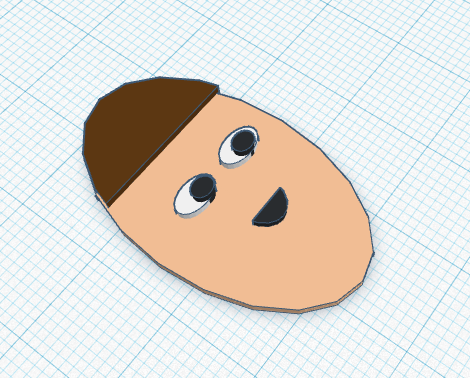
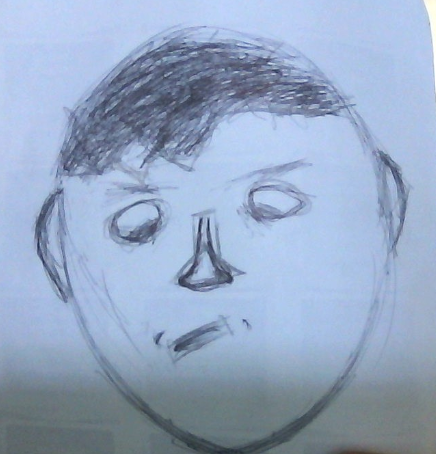
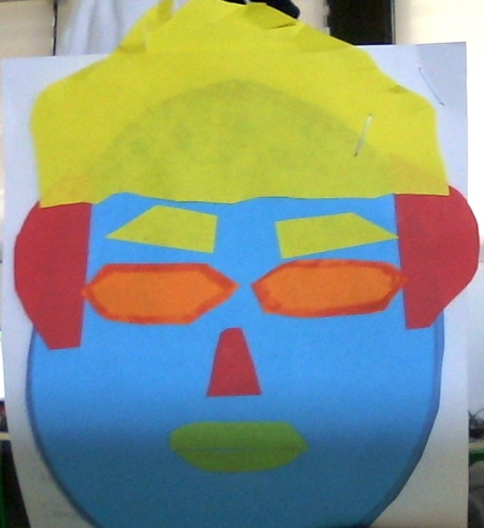
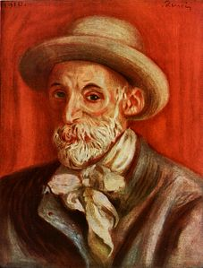

El tercer dibujo
Este el prducto final. Este project entero siento que me a hecho conocerme mas como una persona. Dividiondo my expression en figuras gemoetricas en te ayuda como persona unica y te hace una persona mas alegre. Gracias por leer mi blog.

El segundo dibujo
Aqui intento a clarar mi foto anterior con un dibujo descrptivo que mas me representa. Me tarde como 30 minutos dibujando esto y en mi opinion quedo bien en el final. El dibujo representa una forma de arte abstracta en la que cual representa mi cara con figuras abstractas. Esto va a facilitar el processo en tinkercad porque ahora me puedo enfocar en el diseño envez de la estructura.

La primer foto
Esta foto esta compuesta de figuras primativas intentando replicar la estructura de mi cara. Aunque no me veo nada como las figuras, yo considero esto como un buen intento

Autorretrato famoso
Este es un autorretrato compuesto por el artista Pierre Aguste. El nacio en 1919 en francia y en esta obra de arte tendie a usar colores muy abstractos para ilustrar la imagen de este viejo hombre. Esta imagen me hace pensar en los advances tecnologicos de lo que hemos sidos suertudos vivir.

De que se trata
En este blog voy a documentar el processo de un selfie a un autoretrato. El model 3D va estar diseñado en tinkercad, un software online gratuito para el aprendizaje de modelos 3d. Gracias por leer :)
Mi primer post
Este es mi primer post del selfie a autorretrato